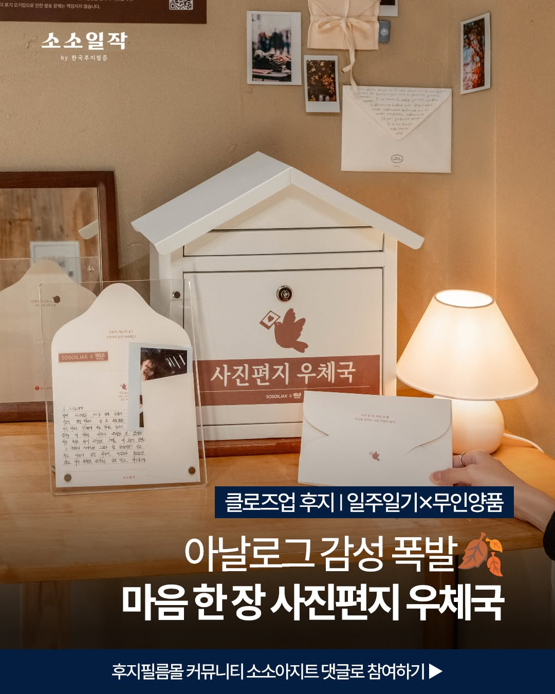

(6) · Fujifilm × MUJI · Exhibition / Workshop
브랜드 협업 전시·워크숍
왜 카메라 브랜드가 텍스트를 필요로 할까?
한국후지필름 일주일기와 무인양품이 함께 연 '마음 한 장 사진편지 우체국' 전시에 생맥이 참여했습니다. 사진에 글을 더하는 법을 전시와 클래스로 나눴습니다.
Situation사진 옆의 빈자리
한국후지필름의 일주일기와 무인양품이 '사진과 편지로 마음을 기록하는 계절'을 주제로 전시를 열었습니다. 카메라 브랜드의 전시이지만 주인공은 사진 옆에 붙는 편지였습니다.

Solution사진편지 쓰는 법
전시는 편지 멘토 세 명(하승완 작가, 황석희 번역가, 이훤 시인·사진가)의 손편지, 셀피큐브에서 사진을 뽑아 직접 써 보는 사진편지, 11월에 편지를 받아 볼 수 있는 우편국으로 구성됐습니다. 생맥은 여기에 '생맥이 알려주는 사진편지 쓰는 법'으로 참여했습니다.
오프라인으로는 〈생맥이 알려주는 사진편지 쓰는 법〉 클래스를 기획하고 진행했습니다. 10월 26일에 두 차례 열었습니다. 클래스 순서 · 현장 사진
Result같은 말을 하는 브랜드
참가자 수 · 후기
언어가 달라도 같은 말을 하는 브랜드를 알아보는 법을 배웠습니다.